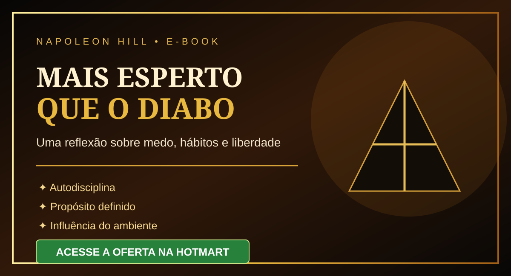

Compreender o medo
Reflita sobre como o medo pode influenciar decisões e limitar possibilidades.
Uma reflexão provocativa sobre medo, hábitos, autodisciplina e a influência que o ambiente pode exercer sobre nossas escolhas.
QUERO CONHECER O E-BOOK →Produto digital • Consulte os detalhes no checkout
Reflita sobre como o medo pode influenciar decisões e limitar possibilidades.
Explore o papel da autodisciplina na construção de hábitos e escolhas conscientes.
Pense sobre direção, objetivos e a importância de agir com intenção.
Considere como influências e rotinas afetam seu modo de pensar.
Uma leitura para quem deseja examinar suas escolhas, questionar limitações e desenvolver uma mentalidade mais consciente e independente.
Em Mais Esperto que o Diabo, Napoleon Hill apresenta uma abordagem provocativa sobre os mecanismos que podem influenciar pensamentos e comportamentos.
A obra aborda temas como medo, propósito definido, autodisciplina, educação, ambiente e persistência diante das dificuldades.
VER A OFERTA →Confira preço, formato, entrega e condições diretamente na página oficial de pagamento.
ACESSAR A OFERTA NA HOTMART ↗Checkout configurado para o link informado.Inclua aqui somente avaliações autênticas de compradores, com autorização de uso. Não utilize nomes, fotos ou comentários fictícios.
Clique no botão de compra para abrir o checkout Hotmart.
Consulte as instruções de acesso exibidas pela Hotmart após a confirmação da compra.
As opções aparecem diretamente no checkout.
Consulte o prazo e as condições indicadas na oferta antes de concluir a compra.